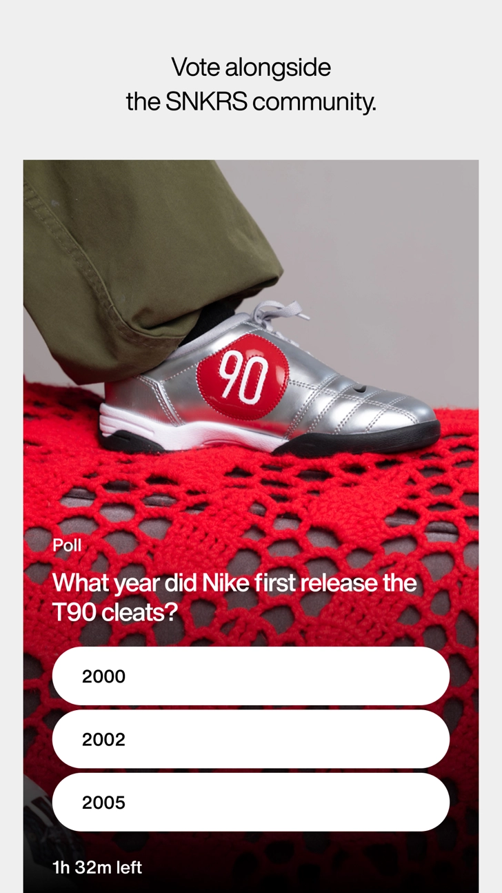
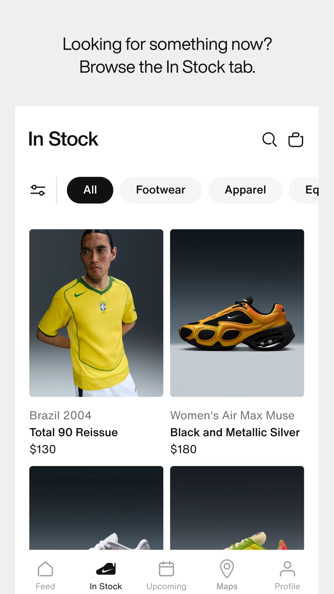

我每周用 SNKRS 抢三双鞋的完整流程——从发售日历到门店取货不慌不忙
以前每次抢鞋都是打开 App 刷三分钟、抽签关了才发现没开通知、中签了又赶不上付款。现在把 SNKRS 嵌进一套固定流程，日历、银行卡、门店地址全部提前对接好，每周只花五分钟跑完整个环节。
旧流程的三个死穴
说出来不怕笑话，去年冬天我第一次中签 Air Jordan 11 Concord 那次，手忙脚乱差点搞砸：App 推送没开（Android 被系统杀后台了），靠邮件提醒才发现中签；打开付款页面时发现绑定的招商银行卡过期了，临时换卡花了四分钟；最后在第 9 分 47 秒完成扣款，出了一身冷汗。
那次之后我算了一下账：过去半年大概参与了三十多次抽签，真正提交成功的不到二十次，中间漏掉的原因五花八门——要么忘了开通知、要么支付方式失效、要么 Pass 和 Draw 两个渠道只投了一个、要么门店地址没选对超时放弃。每次都是临场救火，根本没章法。
问题出在哪？我把 SNKRS 当成了一个孤立的 App，而不是一套要嵌进我日常习惯里的工具。抽签这件事不是打开 App 那一分钟的事，从发售前三天到中签后十分钟，整条链上每一个环节都不能断。
新流程：SNKRS 嵌进我的鞋抢日历
我现在每周的抢鞋节奏是固定的：周一晚上去 SNKRS 的官网看发售日历，提前把这周要冲的鞋款全部过一遍，然后按流程走一遍准备工作。整个链路分成五个环节，每个环节都对接固定的工具，没有临场判断。
环节一：发售日历同步到系统日历
SNKRS 的 Upcoming 日历里会提前三到七天公布即将发售的鞋款。我现在养成的习惯是周一晚上花十分钟把这周感兴趣的鞋款逐个点开，记下抽签开始时间和门店（如果有 Pass），然后手动同步到 iPhone 自带日历里。
为什么要手动同步而不是依赖 SNKRS 自己的推送？因为我发现 SNKRS 的推送在 Android 上经常被系统拦截——华为、小米、OPPO 的后台策略对 SNKRS 这种非国产 App 特别严格，不锁后台、不开自启动大概率收不到。而 iPhone 日历的提醒是系统级的，不会被任何专注模式或勿扰模式拦截。
我的设置：每双鞋的抽签开始时间设一个提前 15 分钟的提醒，抽签结束时间设一个提前 5 分钟的提醒。这样即使 SNKRS 推送死了，日历也会准时把我拉回 App。

环节二：提前三天检查支付和地址
这是我最容易偷懒的一步，也是去年差点翻车的那步。现在把它变成固定动作：每逢周一周五各检查一次 SNKRS 账户。App 本身也要确保是最新版，从官方下载渠道拿到的版本最稳，各平台都有。
打开 App → 个人资料 → 账户设置，依次确认三件事：
- 绑定的银行卡有效期是否还在三个月以上，如果快过期了直接换一张新卡绑进去；
- 主收货地址有没有变化（经常出差的我以前留了两个地址，后来 Nike 系统标记了多地址行为，我只留了一个主要地址）；
- 尺码偏好里的默认尺码和我实际常穿的是不是一致。
然后我会在抽屉里专门留一张 2 万元额度的招商银行信用卡，这张卡只绑 SNKRS，平时不用，专门用来通过预授权验证。余额充足、额度够、有效期在明年底——这张卡是整条链的安全垫。抽签提交时 Nike 会对这张卡发起预授权，金额就是鞋款价格，不会真的扣款，但如果中签就直接转成正式扣款，我什么都不用做。
环节三：抽签提交——双渠道同时投
发售时间到点，我会在日历提醒响起后第一时间打开 SNKRS，然后同时做两件事：
如果这款鞋有 SNKRS Pass（线下门店取货），先切到动态页找到 Pass 活动，选距离最近的那家门店，选好尺码，提交预约。Pass 不需要预授权，提交即锁定，不能改。然后回到 Upcoming 日历里找到同一款鞋的 Draw 抽签，选同样的尺码，用绑定的信用卡提交抽签，等预授权通过。
Pass 和 Draw 是两套独立系统，同一账号可以同时两边都投，中签概率互不影响。这套逻辑是我跑了十几轮之后才发现的——后来去snkrs文档翻了一下才确认 Pass 和 Draw 确实是两套独立系统，中签概率互不影响。以前只投 Draw，错过了好几次 Pass 中签的机会。SNKRS 的 Pass 中签率其实比 Draw 高不少，毕竟门店货量是线下渠道单独分配的。

环节四：中签后的 10 分钟倒计时——其实不用等
这是整个流程里变化最少的环节，也是我最省心的环节。因为预授权已经通过了，中签后 Nike 会直接从我绑定的信用卡扣款，我打开 App 看到中签通知时，订单其实已经生成完了。我只需要点进去确认一下收货地址没错、尺码对得上，然后关掉 App 继续干别的。
唯一需要手动介入的情况是预授权失效——比如那张专用信用卡刚好过期了，或者被冻结了。这时候页面会提示更换支付方式，我就立刻切到 Nike 官网订单中心，快速添加一张新卡完成付款。但这种情况我现在基本没遇到过，因为提前三天检查那步已经把风险压到最低了。
环节五：Pass 中签后——到点到店
如果 Pass 中签了，Nike 会在通知里给我指定门店地址、提货窗口时间和提货二维码。我会把提货时间再同步到系统日历里（设一个提前 30 分钟的提醒），然后当天准时过去，出示二维码，刷卡或微信付款，拿鞋走人。Pass 中签不买没有罚款，但我既然抢了就不会放弃。
最容易断链的两个环节怎么补
这套流程跑了大概四个月，断链只发生过两次，都是同一个原因——Android 手机推送被系统杀了。第一次我靠邮件提醒救回来了，第二次我直接把 SNKRS 从 Android 换到了 iPhone。iPhone 的推送机制确实比国产 Android 靠谱太多，不需要关一堆电池优化、不需要开自启动、不需要锁后台，通知就是能准时到。
如果你必须用 Android，那通知权限这块一定要花半小时彻底搞定：小米开自启动 + 电池无限制，华为手动管理三个启动全勾，OPPO 允许后台弹出界面，vivo 电池设无限制。这些设置一次性做好，后面就不用管了。
另一个容易断的地方是支付方式过期。我的做法很简单：那张专用信用卡设一个日历提醒，到期前 30 天换卡。换完卡之后立刻打开 SNKRS 重新绑一遍，不等预授权失效了再救火。
这套流程什么时候不划算
说实话，不是所有鞋都值得走这套流程。如果只是随便抢个 Air Force 1 配色、中签概率接近 100% 的那种，我根本不会同步日历，打开 App 随手提交一下抽签就完了。
真正值得花时间跑完整流程的，是那些中签概率在 5% 以下的热门款——比如每年的 Jordan 正代、联名款、限量 SB。这些鞋一旦中签就是翻倍的回报，花十分钟提前准备、花半小时搞定权限设置，完全划算。
还有一种情况是 Pass 门店离你太远。我住杭州，上海的门店也有货，但来回要三个小时，Pass 中签了反而成了负担。这种情况下我会只投 Draw，不碰 Pass，省得中签了还得赶高铁。
最后的经验
把 SNKRS 从"偶尔打开刷一下"变成"嵌进固定流程的一环"之后，我从三个月前的二十次提交中了一次，变成最近三个月十五次提交中了四次（其中两次 Pass、两次 Draw），成功率翻了三倍。不是我运气变好了，是漏掉的环节少了。
核心就一句话：抽签这件事，能提前准备的绝对不要留到临场。上面提到的全部操作指南在GitHub、Gitee、GitCode 都能找到，国内用户看 Gitee 最顺。